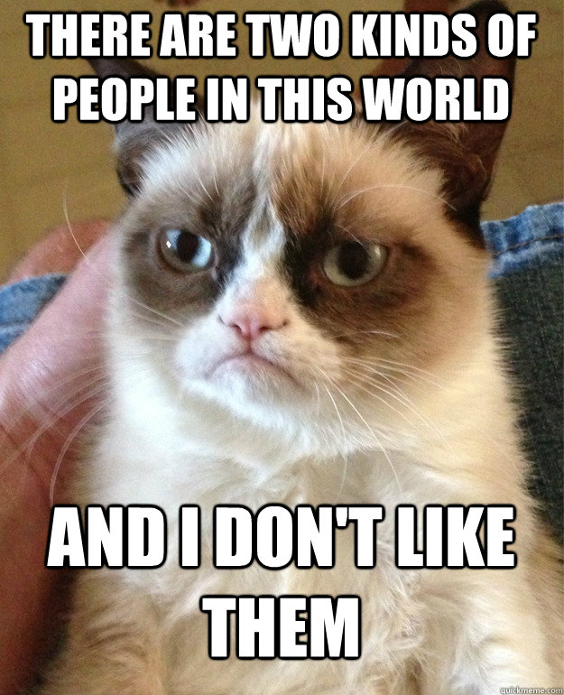

 Solar-energy conversion usually takes one of two forms: the ‘quantum’ approach, which uses the large per-photon energy of solar radiation to excite electrons, as in photovoltaic cells, or the ‘thermal’ approach, which uses concentrated sunlight as a thermal-energy source to indirectly produce electricity using a heat engine. Photon-Enhanced Thermionic Emission (PETE) is a new concept for solar electricity generation, which combines quantum and thermal mechanisms into a single physical process. The device is based on thermionic emission of photoexcited electrons from a semiconductor cathode at high temperature.